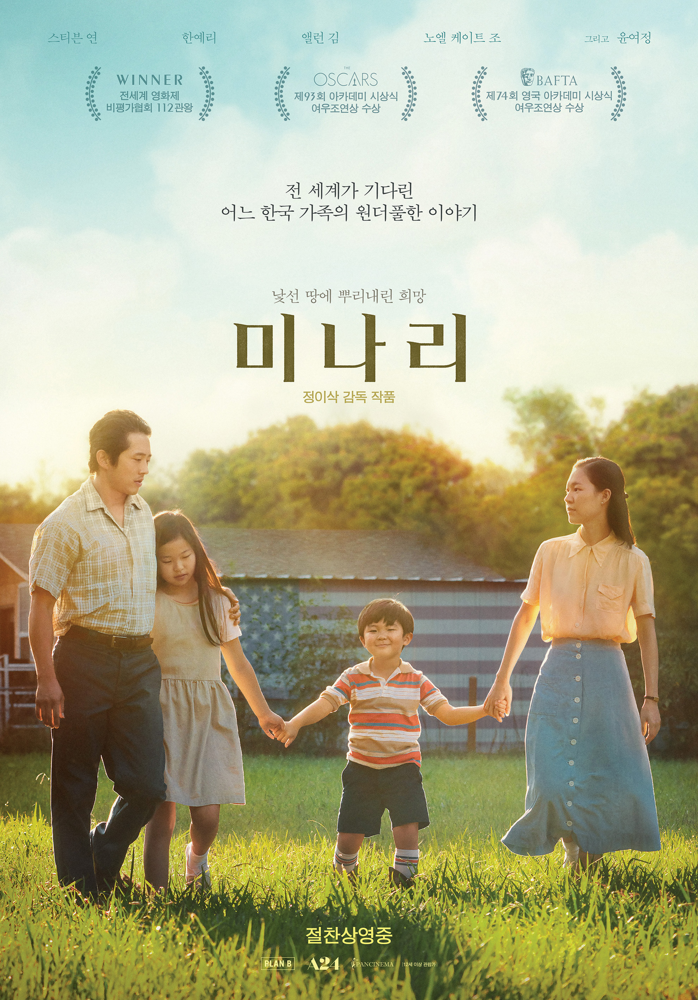
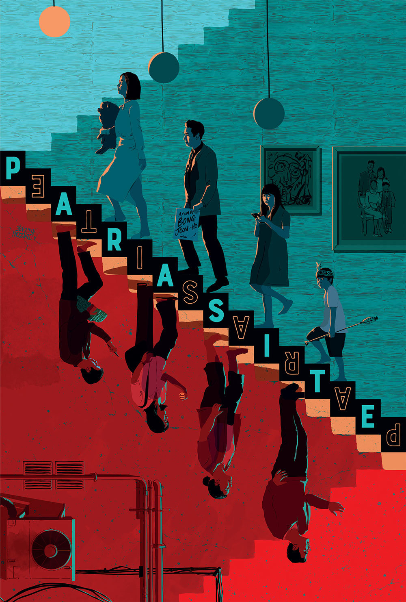

|  |
미나리(Minari) |
| 9.8 |
| 시놉시스: 미나리는 어디서든 잘 자라. 낯선 미국, 아칸소로 떠나온 한국 가족.
가족들에게 뭔가 해내는 걸 보여주고 싶은 아빠 '제이콥'(스티븐 연)은 자신만의 농장을
가꾸기 시작하고 엄마 '모니카'(한예리)도 다시 일자리를 찾는다.
함께 있다면, 새로 시작할 수 있다는 희망으로 하루하루 뿌리 내리며 살아가는
어느 가족의 아주 특별한 여정이 시작된다! |
| > 예고편 및 상세정보 페이지로 이동 |
 |
헤어질 결심(Decision to leave) |
| 9.4 |
| 시놉시스: "산 정상에서 추락한 한 남자의 변사 사건. 담당 형사
'해준'(박해일)은 사망자의 아내 '서래'(탕웨이)와 마주하게 된다.
남편의 죽음 앞에서 특별한 동요를 보이지 않는 '서래'.
경찰은 보통의 유가족과는 다른 '서래'를 용의선상에 올린다.
진심을 숨기는 용의자 용의자에게 의심과 관심을 동시에 느끼는 형사 그들의 헤어질 결심." |
| > 예고편 및 상세정보 페이지로 이동 |
|  |
기생충(Parasite) |
| 9.9 |
| 시놉시스: 전원백수로 살 길 막막하지만 사이는 좋은 기택(송강호) 가족.
장남 기우에게 명문대생 친구가 연결시켜 준 고액 과외 자리는 모처럼
싹튼 고정수입의 희망이다. 온 가족의 도움과 기대 속에 박사장(이선균) 집으로
향하는 기우. 그러나 걷잡을 수 없는 사건이 이들을 기다리고 있었으니… |
| > 예고편 및 상세정보 페이지로 이동 |
|
오징어 게임(Squid game) |
| 9.5 |
| 시놉시스: "빚에 쫓기는 수백 명의 사람들이 서바이벌 게임에 뛰어든다. 거액의 상금으로
새로운 삶을 시작하기 위해. 하지만 모두 승자가 될 순 없는 법. 탈락하는 이들은 치명적인
결과를 각오해야 한다.잔혹한 게임 속에 던져진 이들의 도덕성과 인간성이 시험대에 오른다.
《보좌관》의 이정재와 《슬기로운 감빵생활》의 박해수 주연." |
| > 예고편 및 상세정보 페이지로 이동 |